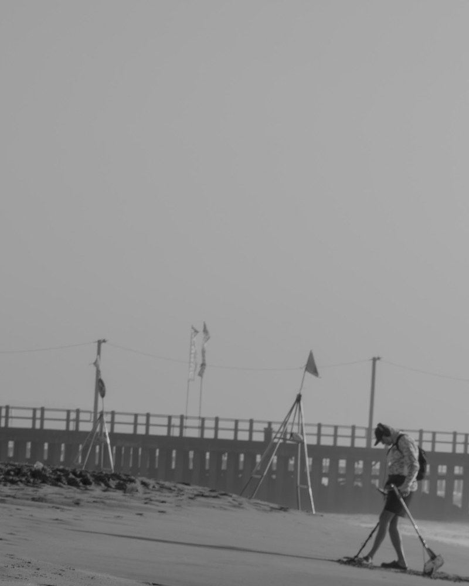

About
Alwin Newman.
I’m Alwin, a photographer based in Kempton Park, on the East Rand. I shoot portraits, couples, families and social content — almost always on location rather than in a studio, because the place is part of the picture.
I’ll help you choose a location and clothing, and guide you through the shoot. You don’t need to know how to pose; most of the best frames here came from people simply walking, waiting or laughing between directions.
Every session is delivered as a private online gallery with high-resolution and web-optimised downloads, so the photographs are yours to keep and to print.
- Location
- Kempton Park, Gauteng — on location across the province
- Availability
- Mornings and weekends, by appointment
- Since
- 2019
- Delivery
- 7–14 days · private online gallery · high-res downloads
